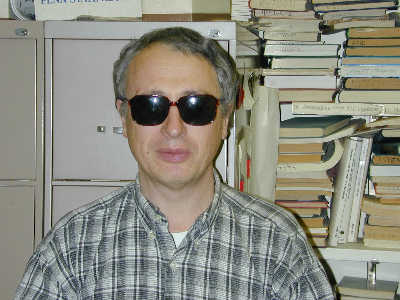
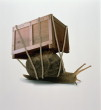

Eberly College of Science
Eberly College of ScienceHome Page
ofLeonid N. Vaserstein
Professor of Mathematics

(814) 8630584 at 215 MB
Skype: vsteinl at 215 MB
dept fax (814) 865-3735
vstein@math.psu.edu
Prof. L. Vaserstein
Department of Mathematics
Penn State University
University Park
PA 16802-6401
Resume
Research
Publications
Algebra & Number Theory
Graduate Students
Teaching & Advising
Pictures
math links
- Last modified: July 25, 2009